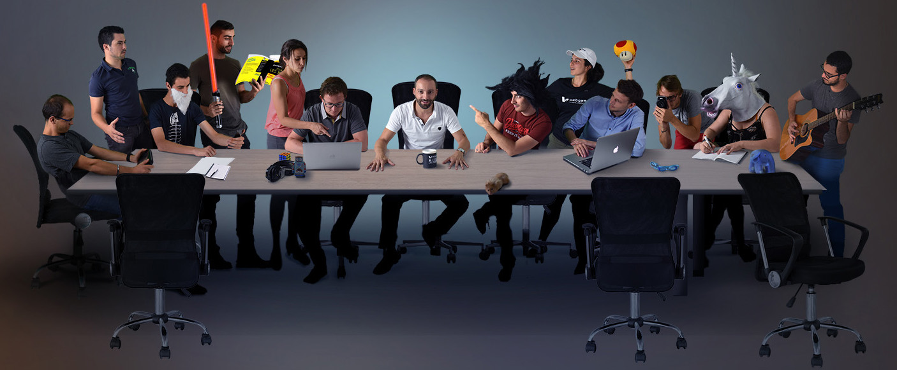

Le bilan Webqam
10 août 2018
Il est maintenant temps pour moi de faire un bilan général de ces six semaines passées à Saint Etienne chez Webqam. En effet,
ce stage touche maintenant à sa fin, qu'est-ce qu'il s’est passé, qu'est-ce que j’ai appris, qu'est-ce que
j’aurai pu mieux faire ?
Ce stage a commencé pour moi par de l’apprentissage. Effectivement j’ai dû apprendre les méthodes de travail
de l’agence web pour pouvoir être en conformité avec les exigences de l’entreprise. L’exercice Kata a donc
été très productif pour moi comme j’ai pu travailler sur des technologies que je ne connaissais pas. J’ai
vraiment beaucoup aimé cette tâche et les nouvelles choses que j’ai apprises, cela m’a donné envie de continuer
à utiliser ces technologies dans le futur et à progresser dessus.
Une grande partie de mon stage consistait également à mettre à jour des sites Wordpress ou à modifier et
ajouter du contenu. C’est également une technologie que je n’avais jamais manipulée avant, de ce fait je
pense avoir pu progresser au fur et à mesure des jours et gagner en productivité.
Enfin, la dernière tâche qui m’a été assignée était la borne photo Webqam, j’ai eu à effectuer une documentation
complète sur le logiciel Social Booth. Encore une fois, quelque chose que je n’avais jamais fait avant ce
stage, j’ai donc essayé de faire de mon mieux en essayant toutes les options du logiciel et en m’aidant du
site officiel. J'ai fait un article plus complet que vous pouvez retrouver
ici.
Au regard de ces tâches assez variées et pleines de nouveautés, je pense avoir acquis de nouvelles capacités
et de nouvelles connaissances pour le futur. En effet, toutes ces choses m’ont permis de progresser globalement
sur les technologies web et de m’intéresser à d’autres choses que ce soit niveau développement web ou méthode
de travail. C’est maintenant à moi de faire de ces connaissances des acquis pour, plus tard, pouvoir les
réutiliser sur d’autres expériences ou projets personnels. L'article plus détaillé sur mes tâches est disponible
ici.
Malgré toutes ces bonnes choses à retenir pour la suite, il y a des points sur lesquels je dois m’améliorer.
En effet, lors du « débrief » avec Sébastien Noirie, le directeur technique et mon tuteur pendant ce stage,
il m’a donné comme conseil de mieux m’organiser et de mieux communiquer. Il est vrai que j’aurai dû plus communiquer
avec lui que cela soit au niveau de mon planning et de mes tâches en cours ou au niveau de mes difficultés.
Je voulais pouvoir effectuer toutes les tâches sans aide, mais je me suis rendu compte que cela me retardait
plus qu’autre chose. Pour mes prochaines expériences je dois donc penser à demander plus souvent de l’aide
aux autres pour ne pas perdre du temps.
En conclusion, je vais garder un bon souvenir de cette expérience. En effet, je ressors avec de nouvelles
compétences et connaissances pour la suite. Je sais maintenant sur quoi me concentrer pour m’améliorer
et progresser encore plus. J’ai encore des points d’amélioration et des difficultés sur la communication,
et je tâcherai de faire mieux à l'avenir.
